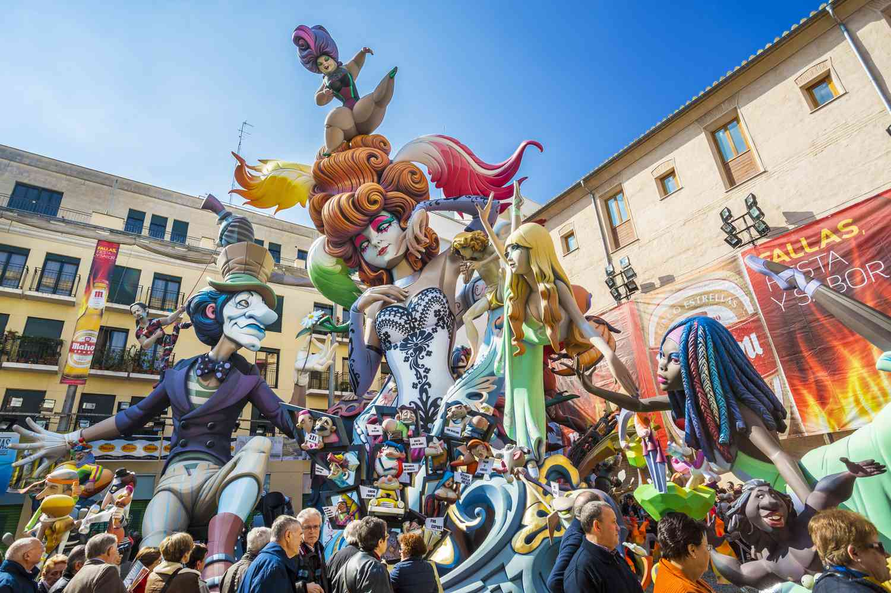
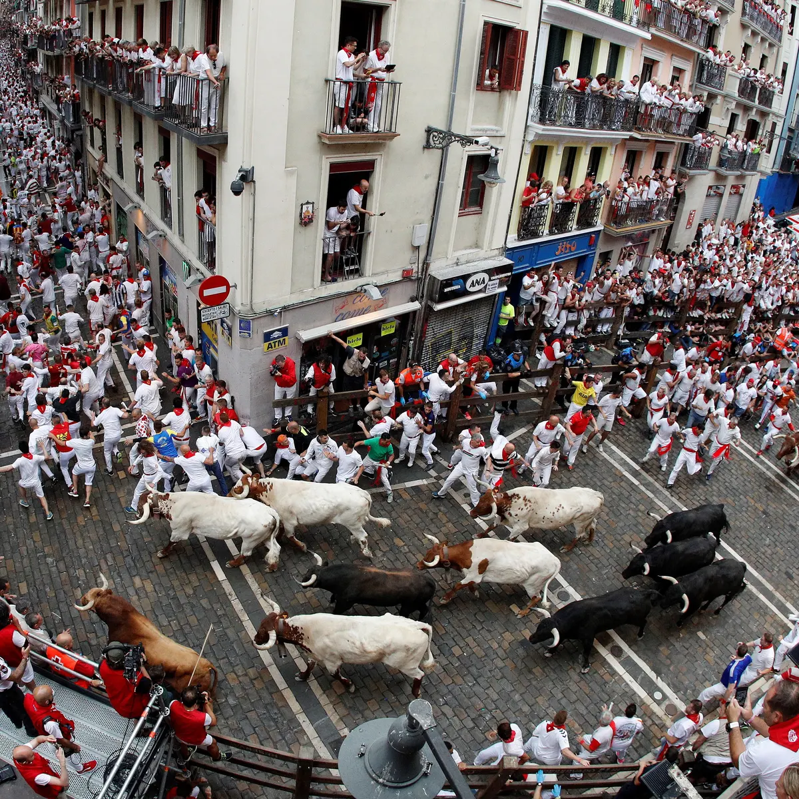

Festival Internacional de Benicàssim
- About: Festival Internacional de Benicàssim is a Spanish indie and alternative music festival. A European favourite, Festival Internacional de Benicàssim has become a gateway festival for music fans around the continent, drawn to it by the festival's huge and diverse lineups, as well as its sun-drenched, seaside setting.
- Location: Valencia, Spain
- Date: 13 Jul 2023 - 16 Jul 2023
Carnival
- About: Carnival is a time of feasting and celebration before the Lent period of fasting. This is a holiday long celebrated throughout history, and the concept is common throughout the world—that of indulgence and fun before the fasting begins.
- Location: Several different cities such as Madrid, Barcelona, Cadiz, Andalusia, Canary Islands, etc...
- Date: 16 Feb 2023 - 22 Feb 2023
Cristianos y Moros
- About: According to popular tradition the festivals commemorate the battles, combats and fights between Moors (i.e. Muslims) and Christians during the period known as Reconquista. The festivals represents the capture of the city by the Muslims and the subsequent Christian reconquering fight. The festival has huge parades, elaborate costumes and plenty of music and gunpowder.
- Location: Valencia and Alicante Region
- Date: 7 Aug 2023 - 11 Aug 2023

Feria de Sevilla
- About: Each day the fiesta begins with the parade of carriages and riders, at midday, carrying Seville's leading citizens which make their way to the bullring, La Real Maestranza, where the bullfighters and breeders meet. This event is meant as a tribute of sorts to the arrival of spring,
- Location: Seville, Spain
- Date: 23 Apr 2023 - 29 Apr 2023

Las Fellas Festival
- About: The Falles is a traditional celebration held annually in commemoration of Saint Joseph. It is a 5-day long street party with spectacular fireworks and light shows that culminates with everything pretty much being set on fire. Also, this festival celebrates the arrival of spring.
- Location: Valencia, Spain
- Date: 15 Mar 2023 - 19 Mar 2023

San Fermín
- About: This festival honours the city's first bishop and patron saint, Saint Fermín. The most famous event that takes place is the running of the bulls.
- Location: Pamplona, Spain
- Date: 6 Jul 2023 - 14 Jul 2023
Semana Grande Festival
- About: Honours the Virgen de Begoña and is also a celebration of Basque culture, it comprises a whole host of events from street concerts and fireworks to parades, as well as traditional Basque dances and rural sport competitions.
- Location: San Sebastian, Spain
- Date: 12 Aug 2023 - 19 Aug 2023
Semana Santa Festival
- About: The Spanish celebration for the week leading up to Easter. It's celebrated all over the country with religious brotherhoods performing penance processions on the streets. This festival is the annual tribute of the Passion of Jesus Christ celebrated by Catholic religious brotherhoods.
- Location: The entire country of Spain
- Date: 2 Apr 2023 - 8 Apr 2023
Tamborrada Festival
- About: It is a celebration of what it means to be a donostiarra (the people of San Sebastian as they are called in Basque) and it is a way for citizens to connect with their identity. The celebration also represents the overcoming of a tragedy and the union of citizens in pursuit of happiness. This festival includes a large celebratory drum parade.
- Location: San Sebastián, Spain
- Date: 20 Jan 2023
Tomatina Festival
- About: This festival is in honor of the town's patron saints, Luis Bertran and the Mare de Deu dels Desemparats (Mother of God of the Defenseless), the Virgin Mary. Tens of thousands of participants come from all over the world to fight in a harmless battle where more than one hundred metric tons of over-ripe tomatoes are thrown in the streets.
- Location: Buñol, Spain
- Date: 31 Aug 2023
About Festivals in Spain
The festivals included on this page are the most popular estivals celebrated in Spain. Spanish fiestas symbolise the very essence of Spain and the Spanish people. They're colourful, vibrant, usually extremely noisy, often chaotic and always great fun. The origins of many of the country's countless fiestas lie in religious feasts, often honouring a patron saint. Each festival has a completely unique vibe, with unforgettable traditions and customs that make it unlike any other celebration in the world.